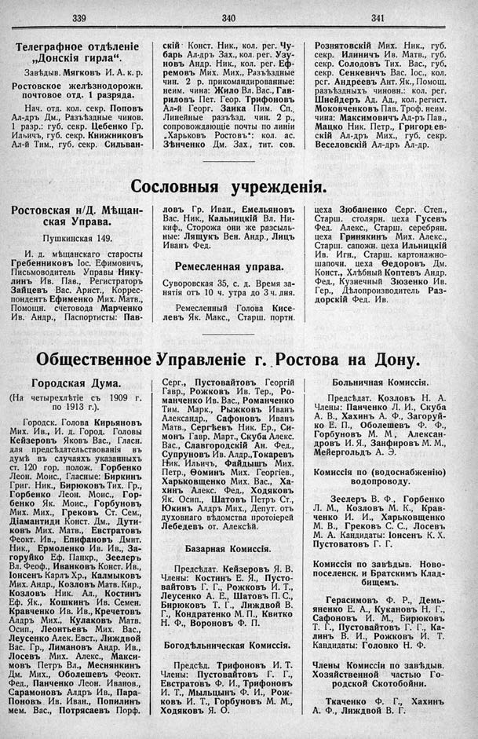

Лист источника 245
Скан

Распознанный текст
339
Телеграфное отдѣленіе
„Донскія гирла“.
Завѣдыв. Мягковъ И. А. к. р.
Ростовское желѣзнодорожн.
почтовое отд. 1 разряда.
Нач. отд. кол. секр. Поповъ
Ал-дръ Дм., Разъѣздные чинов.
1 разр.: губ. секр. Цебенко Гр.
Ильичъ, губ. секр. Книжниковъ
Ал-й Тим., губ. секр. Сильван-
340
скій· Конст. Ник., кол. рег. Чу-
барь Ал-дръ Зах., кол. рег. Узу-
новъ Андр. Ник., кол. рег. Еф-
ремовъ Мих. Мих., Разъѣздные
чин. 2 р. прикомандированные:
неим. чина: Жило Вл. Вас., Гав-
риловъ Пет. Геор. Трифоновъ
Ал-й Георг. Заика Пим. Сп.,
Линейные разъѣзд. чин. 2 р.,
сопровождающіе почты по линіи
„Харьковъ Ростовъ“: кол. ас.
Зѣнченко Дм. Зах., тит. сов.
341
Рознятовскій Мих. Ник., губ.
секр. Ильиничъ Ив. Матв., губ.
секр. Солодовъ Тих. Вас., губ.
секр. Сенкевичъ Вас. Іос., кол.
рег. Андреевъ Ант. Як., Помощ.
разъѣздныхъ чиновн.: кол. рег.
Шнейдеръ Ад. Ад., кол. регист.
Моковченковъ Пав. Троф. неим.
чина: Максимовичъ Ад-ръ Пав.,
Мацко Ник. Петр., Григорьев-
скій Ал-дръ Мих., губ. секр.
Веселовскій Ал-дръ Ал-др.
Сословныя учрежденія.
Ростовская н/Д. Мѣщан-
ская Управа.
Пушкинская 149.
И. д. мѣщанскаго старосты
Гребенниковъ Іос. Ефимовичъ,
Письмоводитель Управы Нику-
линъ Ив. Пав., Регистраторъ
Зайцевъ Вас. Арист., Коррес-
пондентъ Ефименко Мих. Матв.,
Помощн. счетовода Марченко
Ив. Андр., Паспортисты: Пав-
ловъ Гр. Иван., Емельяновъ
Вас. Ник., Кальницкій Вл. Ни-
киф., Сторожа они же разъыль-
ные: Ляшукъ Вен. Андр., Лицъ
Иванъ Фед.
Ремесленная управа.
Суворовская 35, с. д. Время за-
нятія отъ 10 ч. утра до 3 ч. дня.
Ремесленный Голова Кисе-
левъ Як. Макс., Старш. портн.
цеха Зюбаненко Серг. Степ.,
Старш. столярн. цеха Гусевъ
Фед. Алекс., Старш. серебрян.
цеха Гринякинъ Мих. Алекс.,
Старш. сапожн. цеха Ильницкій
Ив. Игн., Старш. картонажно-
шапочн. цеха Ѳедоровъ Дм.
Конст., Хлѣбный Коптевъ Андр.
Фед., Кузнечный Зюзенко Ив.
Гер., Дѣлопроизводитель Раз-
дорскій Фед. Ив.
Общественное Управленіе г. Ростова на Дону.
Городская Дума.
(На четырехлѣтіе съ 1909 г.
по 1913 г.).
Городск. Голова Кирьяновъ
Мих. Ив., И. д. Город. Головы
Кейзеровъ Яковъ Вас., Гласн.
для предсѣдательствованія въ
думѣ въ случаяхъ указанныхъ
ст. 120 гор. полож. Горбенко
Леон. Моис., Гласные: Биркинъ
Григ. Ник., Бирюковъ Тих. Гр.,
Горбенко Леон. Моис., Гор-
бенко Як. Моис., Горбуновъ
Мих. Мих., Грековъ Ст. Сем.,
Діамантиди Конст. Дм., Дути-
ковъ Мих. Матв., Евстратовъ
Феокт. Ив., Епифановъ Дмит.
Ник., Ермоленко Ив. Ив., За-
горуйко Еф. Панкр., Зеелеръ
Вл. Феоф., Иванковъ Конст. Ив.,
Іонсенъ Карлъ Хр., Калмыковъ
Мих. Андр., Козловъ Матв. Кир.,
Козловъ Ник. Ал., Костинъ
Еф. Як., Кошкинъ Ив. Семен.
Кравченко Ив. Ив., Кречетовъ
Алдръ Мих., Кулаковъ Матв.
Осип., Леонтьевъ Мих. Вас.,
Леусенко Алек. Евст., Лиждвой
Вас. Гр., Лимановъ Андр. Ив.,
Лосевъ Мих. Алекс., Макси-
мовъ Петръ Вл., Меснянкинъ
Дм. Мих., Оболешевъ Феокт.
Фед., Панченко Леон. Иванов.,
Сарамоновъ Алдръ Ив., Пара-
Поновъ Ив. Иван., Попилинъ
мем. Вас., Потрясаевъ Порф.
Серг., Пустовайтовъ Георгій
Гавр., Рожковъ Ив. Тер., Ро-
манченко Ив. Вас., Романченко
Тим. Марк., Рыжковъ Иванъ
Александр., Сафоновъ Иванъ
Матв., Сергѣевъ Ник. Ер., Си-
монъ Гавр. Март., Скуба Алекс.
Вас., Славгородскій Ан. Фед.,
Супруновъ Ив. Алдр.,Токаревъ
Ник. Ильичъ, Файдышъ Мих.
Петр., Ѳоминъ Мих. Георгіев.,
Харьковщенко Мих. Вас., Ха-
хинъ Алекс. Фед., Ходяковъ
Як. Осип., Шатовъ Петръ Ст.,
Юкинъ Алдръ Мих., Депут. отъ
духовнаго вѣдомства протоіерей
Лебедевъ от. Алексѣй.
Базарная Комиссія.
Предсѣдат. Кейзеровъ Я. В.
Члены: Костинъ Е. Я., Пусто-
вайтовъ Г. Г., Рожковъ И. Т.,
Леусенко А. Е., Шатовъ П. С.,
Бирюковъ Т. Г., Лиждвой В.
Г., Кондратенко М. П., Квитко
Н. Ф., Вороновъ Ф. П.
Богодѣльническая Комиссія.
Предсѣд. Трифоновъ И. Т.
Члены: Пустовайтовъ Г. Г.,
Евстратовъ Ф. И., Трифоновъ
И. Т., Мыльцынъ Ф. И., Рож-
ковъ И. Т., Горбуновъ М. М.,
Ходяковъ Я. О.
Больничная Комиссія.
Предсѣдат. Козловъ Н. А.
Члены: Панченко Л. И., Скуба
А. В., Хахинъ А. Ф., Загоруй-
ко Е. П., Оболешевъ Ф. Ф.,
Горбуновъ М. М., Алексан-
дровъ И. Я., Занфировъ М. М.,
Мейергольдъ А. Э.
Комиссія по (водоснабженію)
водопроводу.
Зеелеръ В. Ф., Горбенко
Л. М., Козловъ М. К., Крав-
ченко И. И., Харьковщенко
М. В., Грековъ С. С., Лосевъ
М. А. Кандидаты: Іонсенъ К. Х.
Пустоватовъ Г. Г.
Комиссія по завѣдыв. Ново-
поселенск. и Братскимъ Клад-
бищемъ.
Герасимовъ Ф. Р., Демь-
яненко Е. А., Кукановъ Н. Г.,
Сафоновъ И. М., Бирюковъ
Т. Г., Пустовайтовъ Г. Г., Ка-
линъ В. И., Рожковъ И. Т.
Кандидаты: Головко Н. Ф.
Члены Комиссіи по завѣдыв.
Хозяйственной частью Го-
родской Скотобойни.
Ткаченко Ф. Г., Хахинъ
А. Ф., Лиждвой В. Г.